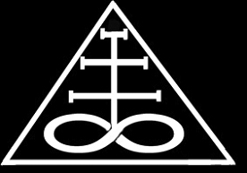

Forums galactiques > Assemblée Galactique : diplomatie officielle > Back in Black
Pages : 1
| Lord Koronag Respect diplomatique : 47  07/04 ETU 16:36 | Score : 7 Détails HRP: je m'excuse pour le manque d'accents, mais je suis en vacances chez mon pere ou il n'y a pas de clavier francais.
J'pique l'idee de grabeuh: soundtrack conseillee: http://www.radioblogclub.com/search/0/dimmu_borgir , "the serpentine offering" La salle de duel avait ete silencieuse pendant longtemps. En dehors, le temps avancait, mais a l'interieur, seule l'epaisse couche de poussiere montrait un quelconque changement. Sur le trone de pierre noire etait assis Koronag, lui aussi couvert d'une epaisse couche de poussiere. Il etait la depuis un moment maintenant, fige comme un roc. L'epee qu'il avat tenu dans sa main avait disparue. Aucun bruit ne derangeait le silence... ...Et dans la galaxie, les ioniques fusaient, les BHA explosaient, et sur les nombreuses planetes resonnaient le bruit des bottes militaires... ...Et dans l'autre endroit, ou errait une ame esseulee, cet autre dimension, resonnaient les cris et les bottes et les explosions. L'ame leva les "yeux" et regarda le ciel s'emplir de visages, d'explosions, de planetes en feu, des images distordues. Mais l'ame reconnaissait l'endroit. Elle sourit... ...Sous l'epaisse couche de poussiere, quelque chose bougea. Le visage depuis si longtemps fige bougea. Les levres s'etirerent pour former un sourire sadique. Les doigts bougerent imperceptiblement... ...L'ame s'etait accroupie et chantait dans une langue depuis longtemps oubliee: "et Nettit...Retsemtkav Nogrog...Notlap Sirap...Dnaltnurb Melrah Org... ...La salle etait vide. Une serie de traces de pas venant du trone deserte menait vers la porte ouverte............ | ||
| Lord Koronag Respect diplomatique : 47 07/04 ETU 16:56 | Score : 7 Détails soundtrack: http://www.radioblogclub.com/search/0/dimmu_borgir , " Mourning Palace"
...Un pas resonna sur les dalles usees de l'Assemblee. Un pas que certains connaissaient, mais qu'ils n'avaient pas entendu depuis longtemps. La double porte fut poussee et un enorme vol de corbeaux entra dans la salle, faisant reculer les commandants. Un nombre incalculable de croassements emplirent la salle, des croassements qui semblaient former des mots dans une langue inconnue: Iet Nettit Nesrvlah Nitsirk Retsemtkav Nogrog Notlih Sirap Nesnej Vis Dnaltnurb Melrah Org Les oiseaux noirs se poserent sur les statues, les pupitres et toutes les places libres de la salle. Un rire sombre et sardonique parvint aux oreilles des commandants qui se tournerent vers la porte. Dans l'embrasure se tenait un grand homme aux cheveux et aux habits aussi noirs que le plumage des oiseaux, qui contrastaient avec sa peau blanche comme neige. Ses yeux semblaient etre deux puits sans fond. Son grand manteau noir touchait presque le sol. Il s'avanca a grands pas, le bruit que faisaient ses hautes rangers noires resonnant dans la salle. A ses doigts brillaient des bagues aux motifs inquietants. A sa ceinture (noire) pendait une grande masse d'armes. Il alla au micro et parla d'une voix grave et puissante: Salutations, Origine! Pour ceux qui me connaissent, je suis de retour, pour les autres: Je suis Koronag, seigneur du Palais du Deuil et grand-pretre du Culte Noir. J'ai ete reveille par le chaos qui regne en ce moment dans la Galaxie, donc un grand merci a tous les fauteurs de troubles. Il y a eu certains changements depuis le temps, je ne suis pas du genre bavard, et j'ai soif, je vais donc aller voir si 'IZakaya a change. Bien a vous. finit-il, et avaec un sourire ironique aux levres, il quitta la salle a grands pas, son long manteau noir virevoltant dans la brise causee par la sorite des corbeaux. Les commandants resterent, certains ebahis, d'autrs pensifs, d'autres couverts de crottes d'oiseau. | ||
| Lothan Respect diplomatique : 17  08/04 ETU 22:44 | Score : 2 Détails Ce soir-là, Lothan Et-Lirach se promenait dans les couloirs déserts de l'Assemblée. Perdu dans ses pensées, il regardait vaguement le ciel constellé d'étoiles par les grandes baies vitrées. Tout a coup, il entendit un pas martial claquer contre les dalles, et un personnage habillé de noir, portant un corbeau sur l'épaule, apparut et passa sans lui accorder un regard. Lothan le regarda passer sans grand intéret, avant de se retourner vers la baie vitrée. Ses yeux s'écarquillerent d'un coup et il se tourna brutalement vers l'inconnu, qui s'était également arrété, dos a lui. L'homme, dont les cheveux noirs tombaient sur les épaules et dont le grand manteau noir traînait par terre, se retourna lentement et regarda Lothan. Celui-ci fut pris d'un tremblement et murmura sans le vouloir le nom que son peuple donnait au Seigneur Noir:
A'arab'zaraq... A'arab'zaraq. "Le faiseur de Cadavres". "Le Corbeau Noir". Le serviteur des Cavaliers de l'Apocalypse. Le démon aux mille noms qui voulaient tous dire "Guerre". L'homme, ou plutot le démon sourit: -" Tiens, un prêtre de Xanthos. Je ne m'attendais pas à voir un des pitoyables Servants de la Flamme ici, Lahmu Adn'Rish." Il avait prononcé le titre comme une insulte. Lothan, vibrant de colere lui répondit: -" Démon! Tu oses prononcer le nom de la Flamme? Toi qui devrait être dans les Limbes d'ou tu es sorti!" -" Toujours aussi bornés, à ce que je vois. Qu'importe. Je finirais bien par vous avoir. Et c'est par toi que je vais commencer. Mes Légions n'ont pas eu d'entrainement depuis longtemps." -" Jamais tes sombres cohortes ne fouleront le sol sacré de Xanthos!" Koronag hocha la tête d'un air de défi puis se tourna et se mit à marcher, puis, comme s'il avait oublié quelque chose, il se tourna à nouveau vers Lothan: Prépare tes guerriers Lahmu, Lahmu Adn'Rish. A'arab'zaraq arrive. |
Pages : 1
Forums galactiques > Assemblée Galactique : diplomatie officielle > Back in Black